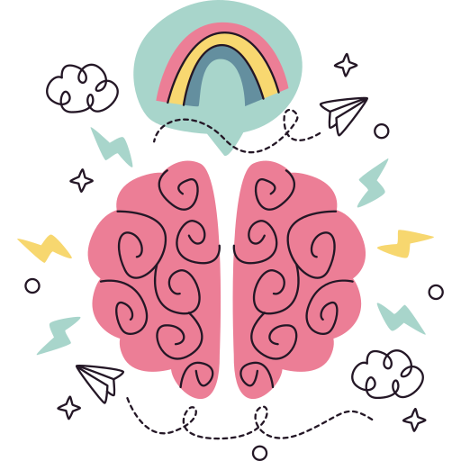

Con la trilogía del desarrollo web, VS
Code y bastante café, realizo sitios web y apps dinámicas; siempre a tiempo y pensados enteramente
en
el usuario final.
Soy emprendedora cervecera, con curiosidad innata de aprendizaje constante y sentido social
activo. La música es mi refugio; suelo tener actualizado mi spotify con géneros
diversos y activar mi mente/cuerpo corriendo 1 hora por día en cada amanecer.

Habilidades
Me especializo en diseño y desarrollo web con HTML5, CSS3 y JavaScript. Tengo
experiencia desarrolando aplicaciones web con Vue, React y complemento mi trabajo con herramientas
como Sass, Figma, Git , GitHub. También utilizo Illustrator, Photoshop y Premiere para el diseño y
conceptualización de anuncios digitales.